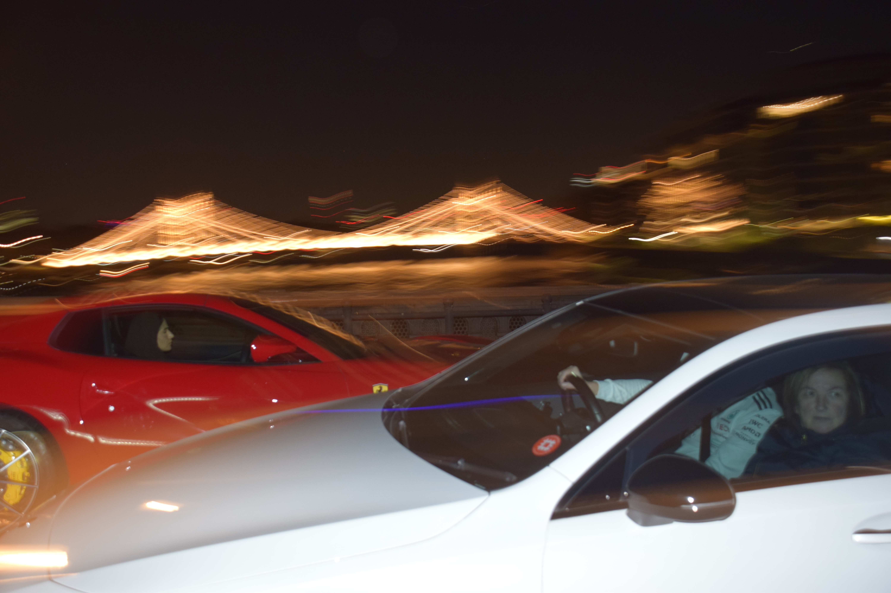
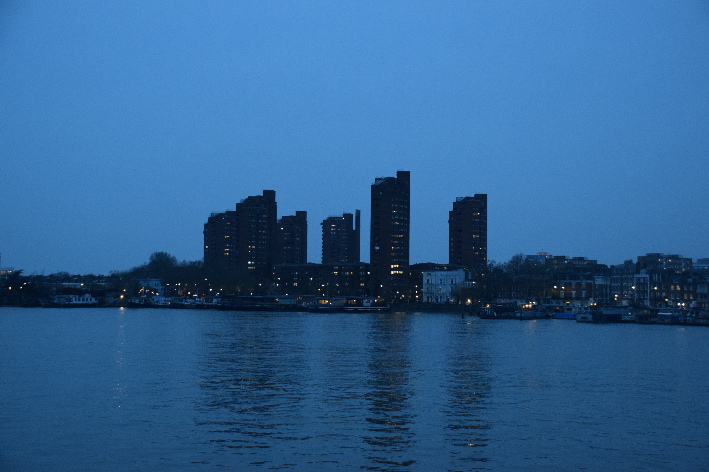
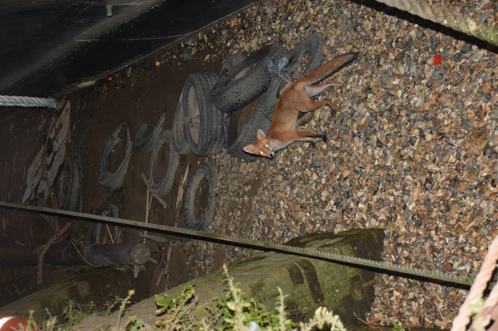

This album is a collection of pictures from the River Thames in London (or close enough to it).
Hamza Al-Aqqad
1. East vs West - March 2026

2. Twilight Blue 1 - March 2026

3. Fox During the Low Tide - August 2026

Click the picture to return home.